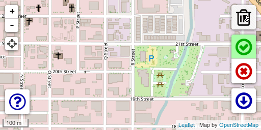

Click on the map to place markers that signify "nearby" and "too far" to help narrow down the possible location of whatever \'mon you\'re hunting.
A blue area will be created around the locations where the target Pokémon could be, based on your markers.
If you like this app, please consider making a donation so I can buy some bag upgrades. :)
This app is open-source, in case you want to contribute.
One or more nearby areas do not overlap.
There is likely more than one spawn nearby.
Better tracking of multiple spawns is in development.